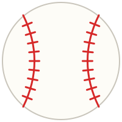

Shohei Ohtani es un beisbolista japones nacido el 5 de julio de 1994 en la ciudad de Oshu, en la prefectura de Iwate, Japon. Es considerado uno de los jugadores mas completos de la historia del beisbol porque es un jugador de dos vias, es decir, que lanza como pitcher y tambien batea como jugador de posicion. Antes de llegar a las Grandes Ligas jugo en Japon con los Hokkaido Nippon-Ham Fighters, y en el ano 2018 debuto en la MLB con los Angelinos de Los Angeles, donde gano el premio al Novato del Ano.
Durante su etapa con los Angelinos gano el premio al Jugador Mas Valioso de la Liga Americana en los anos 2021 y 2023, siendo elegido de forma unanime en las dos ocasiones. En diciembre del 2023 firmo con los Dodgers de Los Angeles un contrato por diez anos y setecientos millones de dolares, el contrato mas grande en la historia del deporte profesional. Una parte muy importante de ese dinero quedo diferida para pagarse en anos posteriores, lo que le permitio al equipo tener dinero disponible para contratar a mas jugadores.
Los Dodgers de Los Angeles son un equipo de beisbol profesional de la Major League Baseball. Fueron fundados en el ano 1883 en Brooklyn, Nueva York, y en el ano 1958 se mudaron a la ciudad de Los Angeles, California. Juegan como locales en el Dodger Stadium, inaugurado en 1962, que es el estadio de beisbol con mayor capacidad del mundo y uno de los mas antiguos que siguen en uso. Sus colores representativos son el azul y el blanco, y pertenecen a la Division Oeste de la Liga Nacional.
En su primera temporada con los Dodgers, en el ano 2024, Ohtani se convirtio en el primer jugador en la historia de las Grandes Ligas en conectar cincuenta jonrones y robar cincuenta bases en una misma temporada. Termino con cincuenta y cuatro jonrones y cincuenta y nueve bases robadas, gano el premio al Jugador Mas Valioso de la Liga Nacional de manera unanime y ayudo al equipo a ganar la Serie Mundial venciendo a los Yankees de Nueva York. Ese ano no lanzo porque se estaba recuperando de una cirugia en el codo.
En el ano 2025 regreso a lanzar ademas de seguir bateando, volvio a ganar el premio al Jugador Mas Valioso de la Liga Nacional y los Dodgers ganaron otra vez la Serie Mundial, en esta ocasion contra los Azulejos de Toronto. Con esto los Dodgers lograron campeonatos en dos anos seguidos, algo que no pasaba en el beisbol desde hacia mas de veinte anos.
Lo que mas me gusta de este tema es que Ohtani demuestra que si se puede ser muy bueno en dos cosas al mismo tiempo, algo que muchos creian imposible en el beisbol moderno. Ademas, su llegada a los Dodgers hizo que el equipo se volviera muy popular en Japon y en todo el mundo, y que mucha gente que antes no veia beisbol empezara a seguirlo.